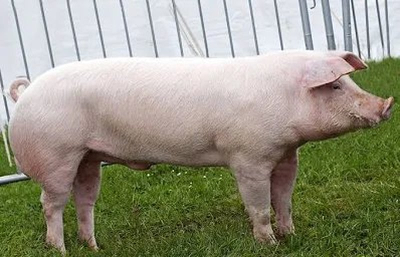
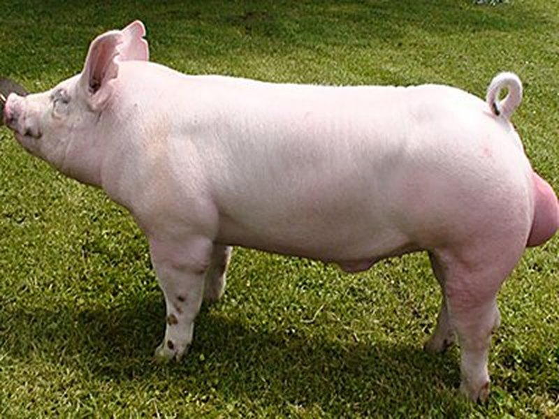
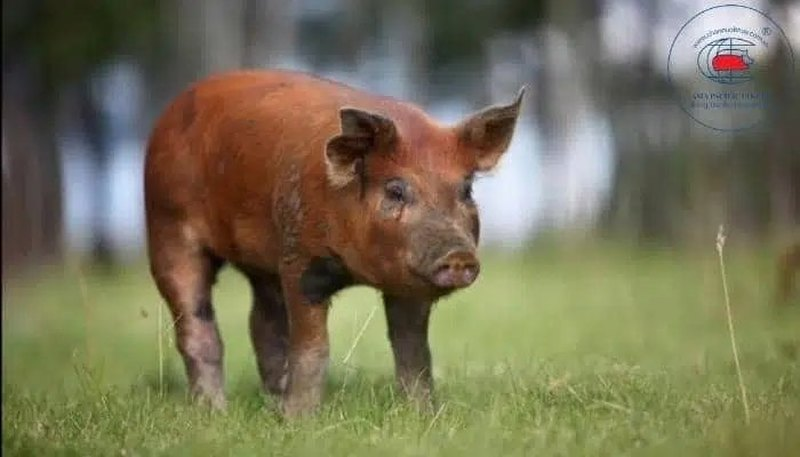
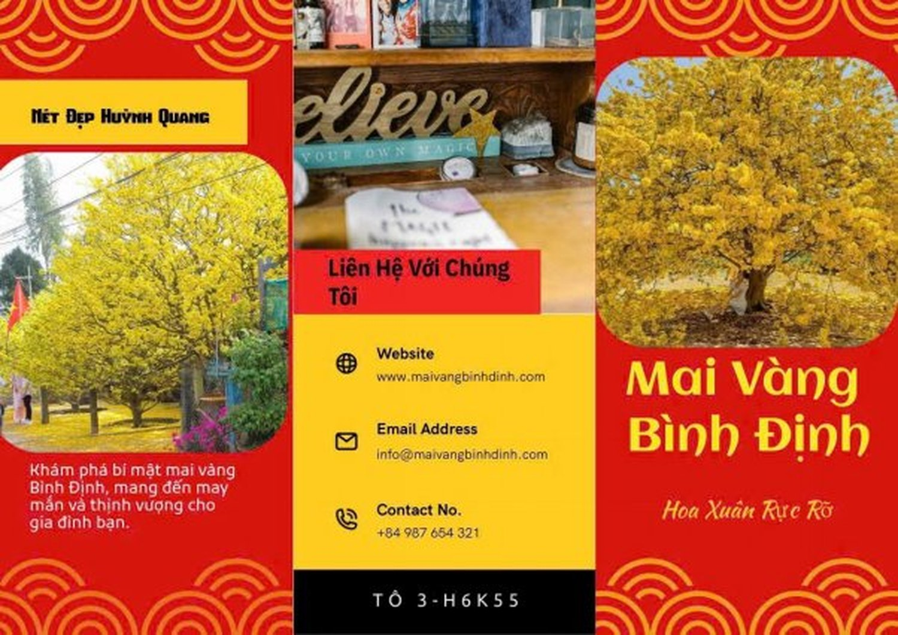
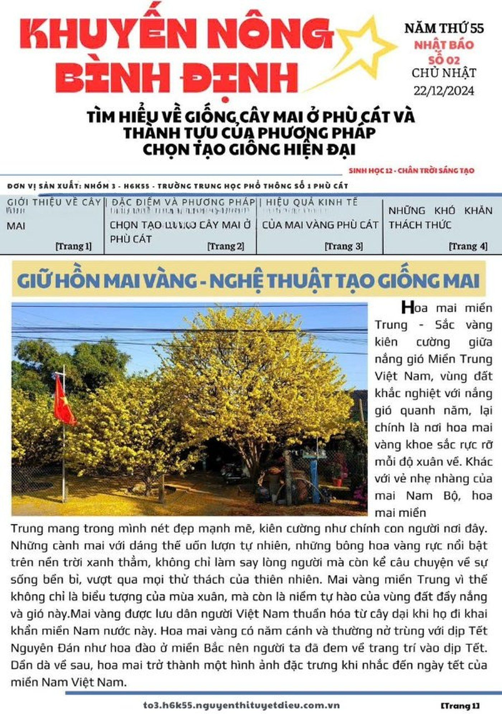
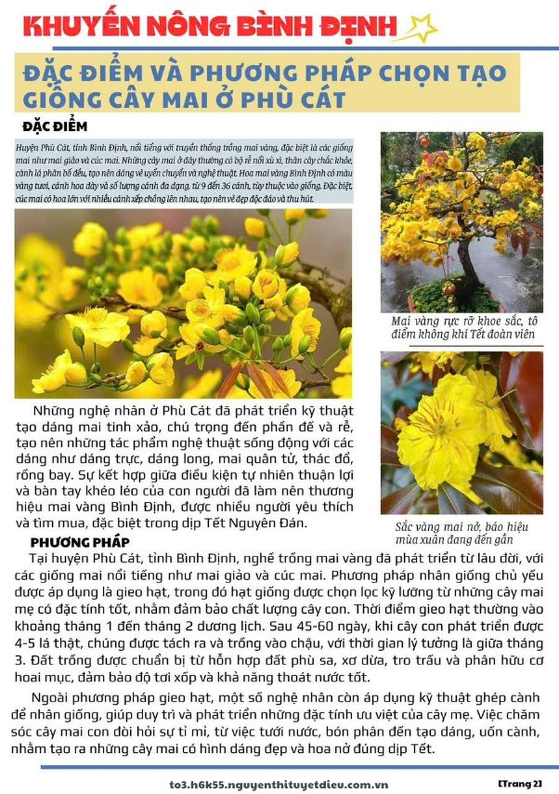
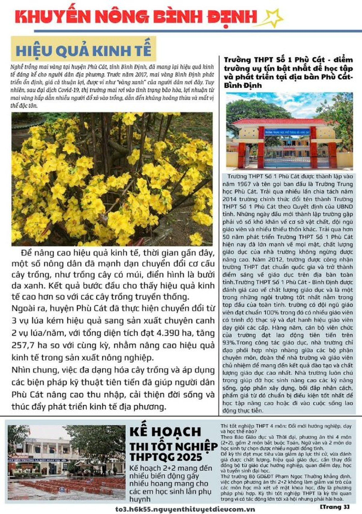
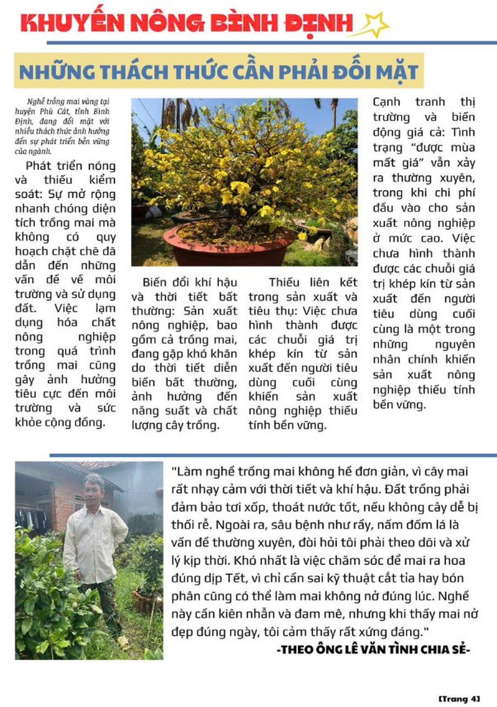
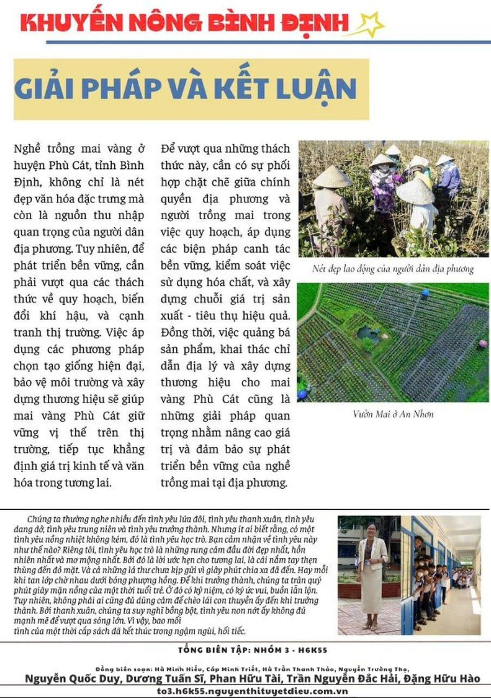

♀ MẹPhù Cát — nơi tri thức sinh học nở hoa trên đồng ruộng.
Chào mừng bạn đến với không gian triển lãm số của tập thể lớp 12A6. Tại đây, chúng tôi kết nối những lý thuyết về di truyền và lai hữu tính từ sách giáo khoa với những thành tựu thực tế ngay tại quê hương Phù Cát.
01 / 05
Trang chủ
Trang 02
Công thức "3 dòng máu" — đỉnh cao lai hữu tính
Để tạo ra những chú heo có năng suất vượt trội tại các trang trại Cát Trinh, người nông dân đã vận dụng công thức lai kinh điển giữa ba giống heo ngoại nhập.


♂ BốYorkshire
Anh Quốc · 🇬🇧
♂ Đực cuốiDuroc
Hoa Kỳ · 🇺🇸
Landrace ♀
×
Yorkshire ♂
→ F1 ×
Duroc ♂
Heo lai 3 dòng máu
Đẻ sai·
Lớn nhanh·
Thịt ngon
Đây chính là minh chứng sống động nhất cho Ưu thế lai — khi con lai vượt trội cả bố lẫn mẹ về các đặc tính kinh tế.
▶ Bản tin Tổ 2
Tìm hiểu thành tựu chọn tạo giống lợn ở địa phương
Trang 03
Mai vàng Bình Định — nghệ thuật chọn giống từ hạt
Khác với các vùng khác thường ghép cành, người trồng mai Phù Cát ưu tiên phương pháp gieo hạt (lai hữu tính) để tạo ra những gốc mai có bộ đế vững chãi và sức sống bền bỉ qua hàng chục năm.
-
i.
Chọn cây mẹ
Cây mẹ phải có hoa đẹp, từ 9 đến 36 cánh, màu vàng tươi rực rỡ và bộ đế vững.
-
ii.
Thụ phấn
Để hoa thụ phấn tự nhiên hoặc thụ phấn chéo có chọn lọc giữa các cây mẹ ưu tú.
-
iii.
Thu hoạch hạt
Hạt mai chín già được thu vào tháng 5–6, phơi mát rồi gieo ngay khi đất còn ẩm.
-
iv.
Tạo cây con
Sau 3–5 năm, chọn lọc những cây có dáng đẹp, gốc bự để dưỡng thành tác phẩm hoàn chỉnh.
Mỗi gốc mai không chỉ là một tác phẩm nghệ thuật mà còn là nguồn "vàng xanh" giúp người dân thoát nghèo, vươn lên làm giàu trên chính mảnh đất quê hương.
Brochure giới thiệu
Mai Vàng Bình Định — ấn phẩm quảng bá
Hai brochure dưới đây do tổ biên soạn thiết kế để giới thiệu đặc trưng và liên hệ làng nghề mai Phù Cát. Click để xem phóng to.
Sắc Xuân Bình Định
Giới thiệu 3 đặc trưng nổi bật của mai vàng Bình Định: Dáng Long, Mai Cúc, Mai Giảo.

Mai Vàng Bình Định
Hoa xuân rực rỡ — thông tin liên hệ và website maivangbinhdinh.com để khám phá thêm.
Trang 04
Khuyến Nông Bình Định — sản phẩm sáng tạo của 12A6 · Nhóm 3 · H6K55
Tạp chí 5 trang do Nhóm 3 lớp H6K55 biên soạn, xoay quanh chủ đề "Tìm hiểu về giống cây mai ở Phù Cát và thành tựu của phương pháp chọn tạo giống hiện đại". Click vào từng trang để xem chi tiết.

Trang 01 · BìaGiữ hồn mai vàng — nghệ thuật tạo giống mai
Hoa mai miền Trung kiên cường giữa nắng gió — biểu tượng văn hóa và niềm tự hào của vùng đất Bình Định. Trang bìa của tạp chí số 02.

02Đặc điểm & phương pháp
Kỹ thuật gieo hạt, ghép cành & lai tạo mai vàng tại Phù Cát.

03Hiệu quả kinh tế
Mai vàng — nguồn "vàng xanh" giúp dân Phù Cát đổi đời.

04Thách thức đối mặt
Phỏng vấn nghệ nhân Lê Văn Tình về nghề trồng mai.

05Giải pháp & kết luận
Hướng đi bền vững và lời cảm ơn của Tổ biên tập.
Đồng biên soạn
Trang 05
Bạn muốn tìm hiểu thêm về giống Phù Cát?
Mọi thắc mắc về kỹ thuật lai tạo giống địa phương, hãy liên hệ với đội ngũ chuyên gia nhí 12A6 hoặc giáo viên hướng dẫn.
Gửi thư cho chúng tôi lamda388@gmail.com
Đơn vị tổ chức
Lớp 12A6 · H6K55
Trường
THPT Phù Cát · Bình Định
Chuyên đề
Sinh học 12 — Di truyền học